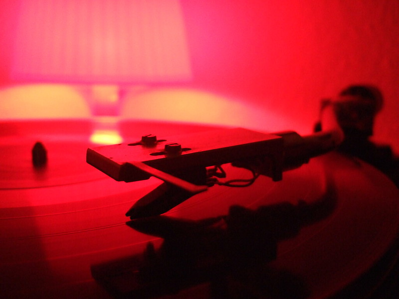
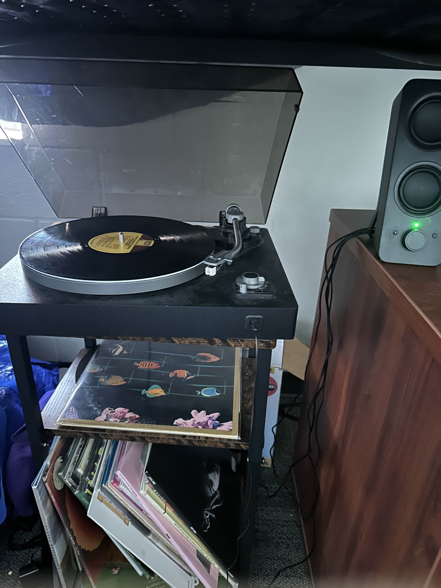
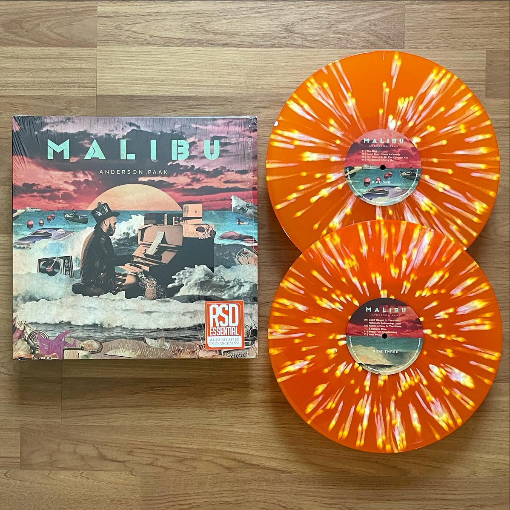
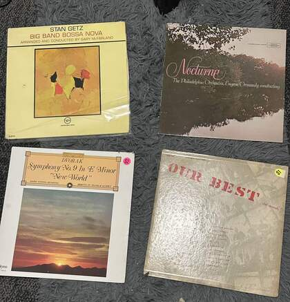

Welcome to my vinyl collecting hobby page. Here, you'll find information about my hobby of collecting
vinyl records, including the best times and locations to find them, as well as tips on how to start your
own collection.

An example setup.
Collecting vinyl records is a fun and more tactile way to experience music, and a hobby that allows you
to highlight your favorite artists and albums.
In the age of streaming, vinyl is a more intentional and personal form of engaging with music that I
really enjoy.
About me
I started collecting in 2022, when I found a vinyl for one of my favorite albums at the time: Call Me If You Get Lost by Tyler, The Creator
. From there, I started collecting my favorite albums as a way to play them in a more intentional context.
I would love to one day have a more quality setup, but for right now this setup sounds great to me and is very reliable. The Insignia Turntable came with a preamp installed, so that saved me a good chunk.

My current setup. Currently Playing: Original Musiquarium I - Stevie Wonder
My current collection consists of around 40 records, spanning over half a century of music. I love music of all kinds, so I rarely leave a record store without something.
Best Times
Most record stores restock on Fridays to coincide with new music releases. Checking online or in person on Friday or Saturday has worked the best for me in order to avoid records going out of stock.
For rarer releases or represses, Record Store Day is an annual stock of less common and anticipated records. Within the community, RSD acts similar to Black Friday, so being able to get anything is a challenge.

My only RSD vinyl
Locations
Store
Location
Pour House
Raleigh, NC
Lunchbox Records
Charlotte, NC
Vertigo Vinyl
Online (Based in Georgia)
These are the main record stores I look at frequently. Pour House is where most of my records come from, as they were about 10 minutes away from where I went to High School.
A good chunk of my older records come from random thrift stores.

Records from various thrift stores
How
Starting a record collection requires some equipment up front, but doesn't have to be very expensive
You'll need:
A turntable, which can be as cheap as $100
A preamp, which is included in most budget turntables
An amplifier, which can be skipped if you have active speakers
Speakers or Headphones. I have both, just in case everyone doesn't want to hear Math Metal.
Then you'll need to find a record store. Lots of bookstores and retail stores carry popular vinyl (Target, Barnes and Noble, Walmart), but supporting a local store is a preferred option.
The location section has stores I frequent, but there are plenty of others out there.
Amazon is also a good choice for purchasing online, but shipping can damage records if not done properly.
Why
Collecting vinyl is a good way to support smaller artists, maintain older records, and a chance to own your music.
The sound quality of vinyl is also appealing to me, as it has a different quality from high fidelity digital formats.
Vinyl also comes with large format album art, which serves as good decoration.
My friends at the record store.
My friends got me into the hobby, so its been fun to talk to them about new music and what records we're looking for.